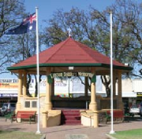

East Terrace
The Eastern Side of the New Town of Loxton
When in 1894, Bookpurnong Station was subdivided for farming, the easiest grades of the track to Loxton’s Hut outstation became well used. In 1902, surveyor William Evans proclaimed it a three-chain (60 metre) road.
Before the railway arrived, the river trade meant that the town expanded at that end and the road naturally became the main street. Being on the eastern side of Loxton, its name came easily too.
Some features of East Terrace
The sugar gums in the median strip, planted on Arbour Day 1910, were removed by 1963 and replaced with claret ashes.
Gas lights installed from 1912, were replaced with electric lights in 1922. ETSA power finally reached Loxton in 1947.
In 1928, Governor Hore-Ruthven opened the war memorial bandstand (the Rotunda) while the jacarandas around it were planted for the 1936 State Centenary.
Footpath tiles designed by Stephen Bowers to reflect our regional environment were installed at the Rotunda for Australia’s Bicentennial in 1988 while a plaque honouring the War Service Settlers was erected there in 1999.
The Council Chambers moved from the Institute to the present library site in 1937 then back to the remodelled Institute in 1976. The library was built in 1982 and the fountain, designed by local plumber Vern Wilksch, was dedicated by Governor Dame Roma Mitchell in 1991. East Terrace had a corresponding West Terrace laid out the western slopes to the river but that road was later renamed McMillan Street. East Terrace remains Loxton’s oldest and busiest road.
Prepared by Rose Mawby, Rex Fielke and Peter Magarey [War Service Settlers – World War Two Service Land Settlement Scheme]